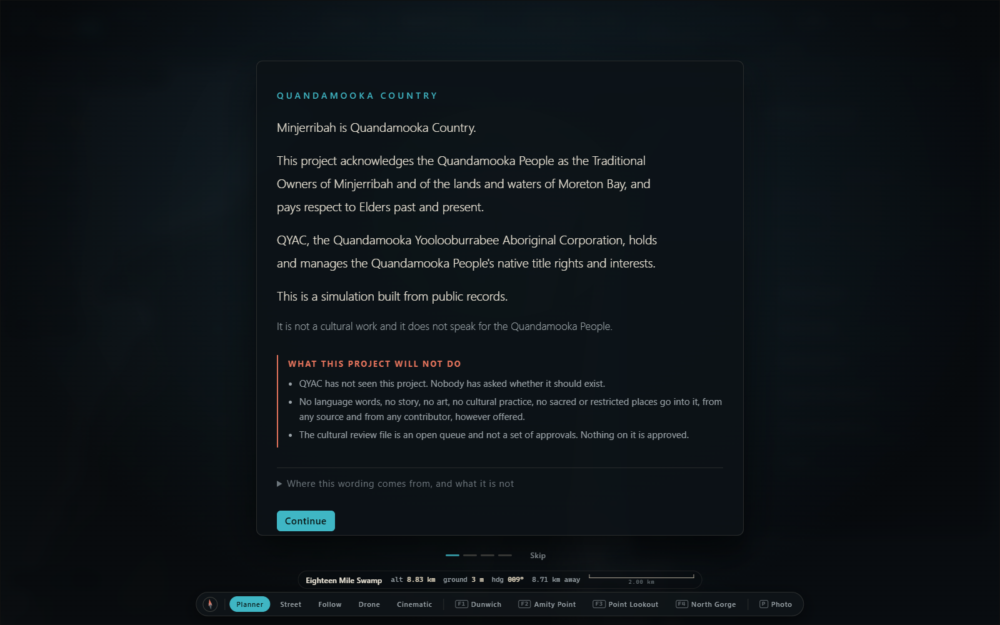

Every part
A twin is built from small pieces, each doing one job. Here is every one of them across both builds: what it does, whether it runs, and the file it lives in, so you can open it yourself.
What counts as a part
A digital twin (a working model of a real place, built from what the place has published about itself) is not one program. It is a stack of small pieces, each doing one job and reading the others by name. This site calls each piece a part and sorts them into five kinds.

Sixteen areas
The first build fills eleven of the sixteen. The second build fills six, two of which (world and data) it shares with the first. The names are the ones the repositories use for their own folders, with one change: the first build's "agents" folder is called people here, because that is what it holds.
| Area | Build | What lives there |
|---|---|---|
| world | first second | In the first build, the ground: a height map of the island (a grid of ground heights, also called a heightfield) in cells 32 metres across, with the map projection, land cover and named regions every other part reads. In the second, the store that keeps two times on every fact, the source ladder that answers a question or says "not known", the pack loader and the island wiring. |
| environment | first | Tide, daylight and weather, running. Three more are designed and not written: fire, the coast and groundwater. |
| ecology | first | What lives on the island: vegetation, koalas, whales, shorebirds, marine life, the dunes and the lakes. |
| infrastructure | first | Power, water, waste, telecoms, a proposed works below the sand that is drawn only as proposed, and public features an islander pinned on the map himself. |
| economy | first | Businesses, tourism, housing, jobs, prices, and a community ledger that counts money only, on purpose. |
| people | first | Around two thousand generated residents with needs, daily rounds and social ties, plus visitors and what is on today. No real person is in it. |
| movement | first | Finding a way along the roads, traffic, crowds on foot, and the boats on the published timetable. |
| civic | first | Sixty-two policy levers with who decides each, the council process, public mood, the budget, consultations and petitions, and which Acts bind whom. |
| story | first | A director that watches the island for moments worth telling, storylines that open and close over days, and the island's own written chronicle. |
| render | first | The camera and every layer that draws the first build, from terrain and ocean through people and vehicles to the colour finishing, and the soundscape. |
| boards | first | The first build's fifteen panels, from the opening noticeboard and the inspector to settings, plus a stewardship board and scanned assets that are designed and not delivered. |
| data | first second | Packs, feeds, connectors, the gate that checks every pack, and the tools that run the island with no picture or write a file for a person to send. Both builds keep this area; the second keeps a registry of every source beside it. |
| kernel | second | The second build's core: the clock, the shape every fact must take, the store, the world runner, seeded randomness, fault hooks and the hash that fingerprints a run. |
| systems | second | The second build's three running systems: the sun, a tide that says it does not know its own height, and the crossings. |
| pages | second | The two pages of the second build: the ferry page for a person, and the lab where the instruments live. |
| instruments | second | The second build's ten checking tools, from the selftest that breaks a copy of the build on purpose to the noticeboard where every finding is posted. |
How the parts hold together
One World object owns a clock, a pool of seeded random numbers, an event bus, a store of entities and a list of systems. Each system declares a phase (environment, ecology, infrastructure, economy, agents, movement, civic, narrative, presentation) and an order inside it, and runs in that order every tick. Systems do not import each other. Each publishes a read model, a small summary under its own name, and reads the others' summaries by name, so half the island can be missing and the rest still runs.
The README states the rule that makes it work: "simulation never imports the renderer". Anything under the simulation folders runs with no graphics engine and no web page. That is why the whole island can run headless (in a terminal, with no picture: a simulated year takes about five minutes) and why determinism (the same seed and the same packs give the same island on anybody's machine) can be checked by running the world twice and comparing every system's summary.
One tick is one island minute, 1,440 a day, and nothing under the simulation reads the real clock. Systems declare a whole-number order and are sorted by it, then by name, so nothing depends on the order they were registered; the determinism instrument is also run with that order shuffled, to prove it. Random numbers come in named streams from one seed, so when two runs differ the check names the one system that drifted rather than the whole world.
Every rule about the code is either a named check in the gate (the script that runs every rule over every file) or carries the words NOT YET CHECKED and a reason. The contract puts it in five words: "There is no third state." A simulated year runs in about a seventh of a second, roughly one blink.
The explorer
Click a part to read its one-sentence description and the file it lives in. Type to search. The three status words are this site's, and they mean exactly this:
Where this list came from
The list above is one file on this site, assets/components.js, read from the first build's system manifest and folders and from the second build's kernel, world, systems, pages, data and tools folders on 2 September 2026. Every count on every page of this site is worked out from that file when the page loads, so the numbers on screen are the list, not a figure typed somewhere else. Each entry shows the part's file so anyone can open it in the repository and see for themselves.